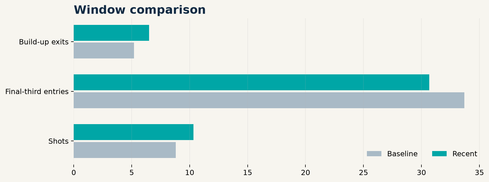
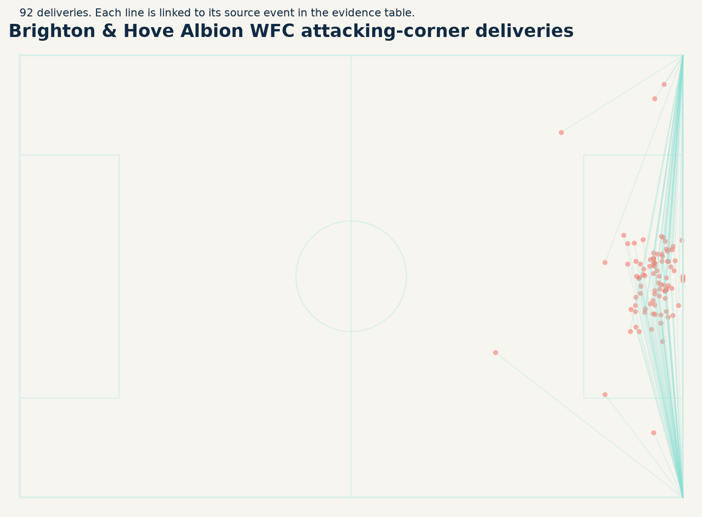
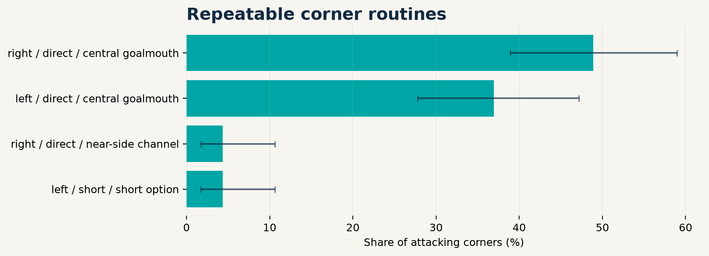

No broad changes passed the gate
The system suppressed every tested metric. Review the descriptive diagnostics, but do not publish a tactical-change claim.
A cautious match-window review with a complete attacking-corner evidence trail.
Baseline: 10 matches · Recent: 6 matches
The system suppressed every tested metric. Review the descriptive diagnostics, but do not publish a tactical-change claim.

Clusters below require at least four examples.


| Routine | n | Share | Shots | xG |
|---|---|---|---|---|
| right / direct / central goalmouth | 45 | 48.9% | 17 | 1.91 |
| left / direct / central goalmouth | 34 | 37.0% | 10 | 1.54 |
| right / direct / near-side channel | 4 | 4.3% | 2 | 0.22 |
| left / short / short option | 4 | 4.3% | 1 | 0.15 |